Orisym
Navigoi itsevarmasti
Oppiminen, testaus ja suunnistuksen symbolien luettelo


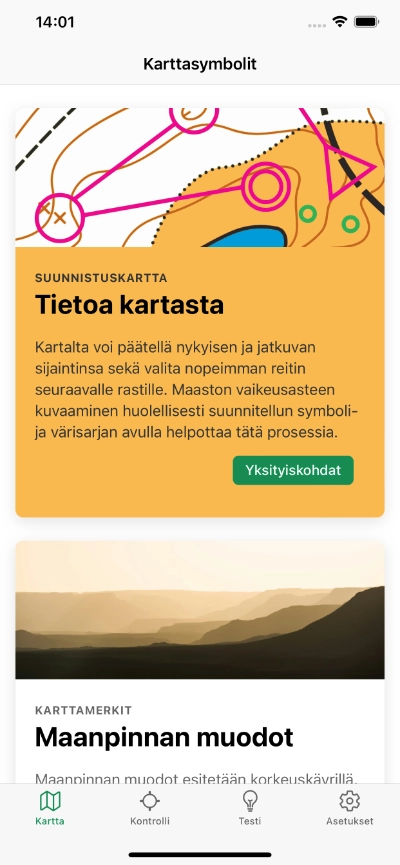
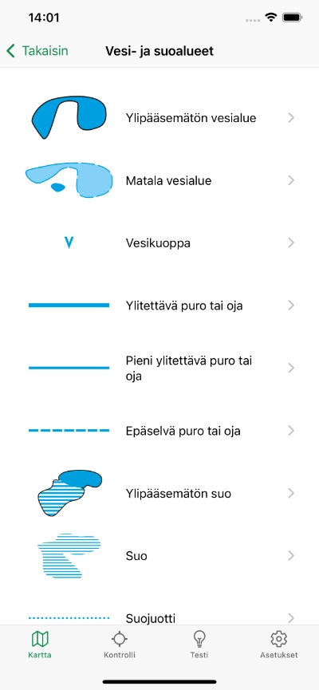
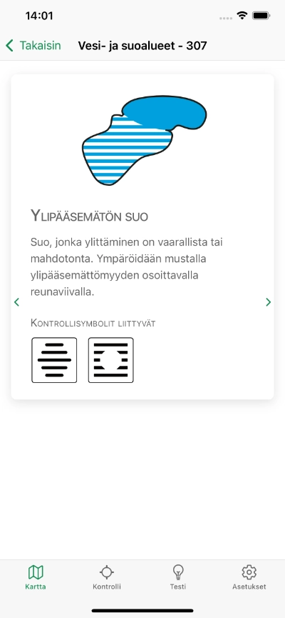
 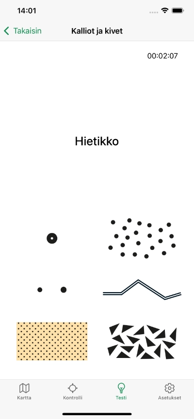
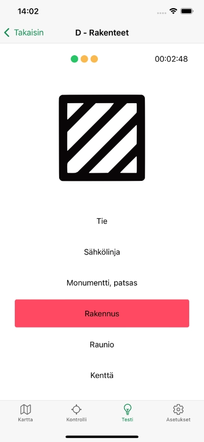
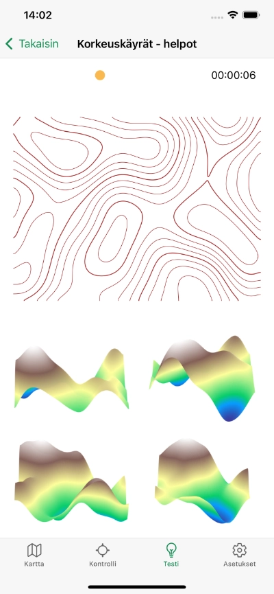
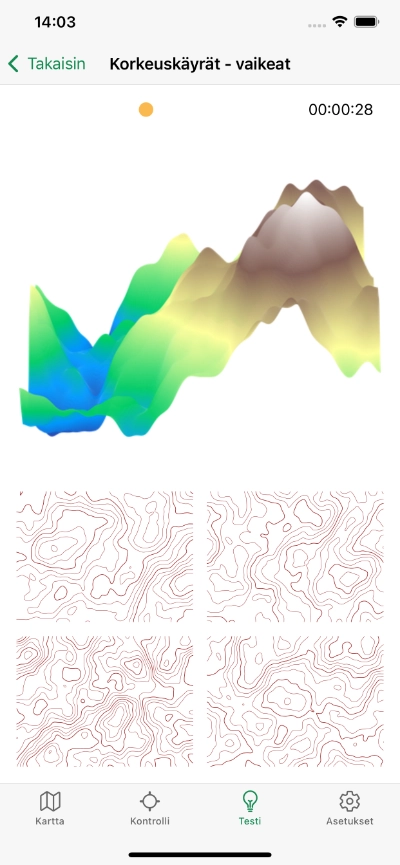
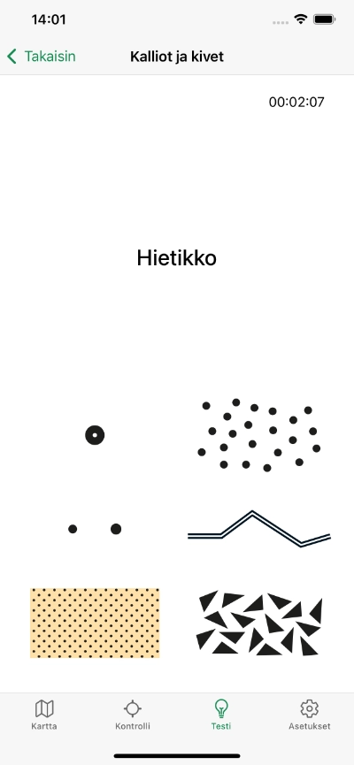
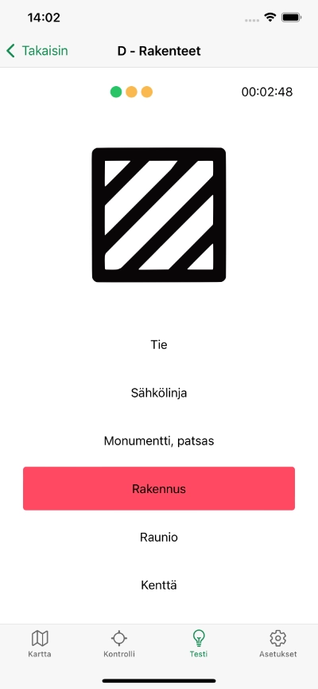
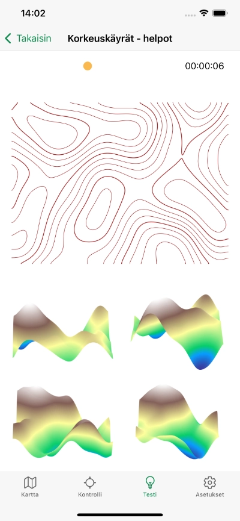
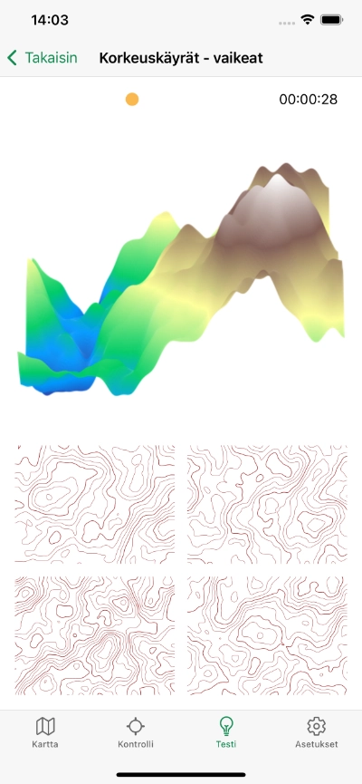
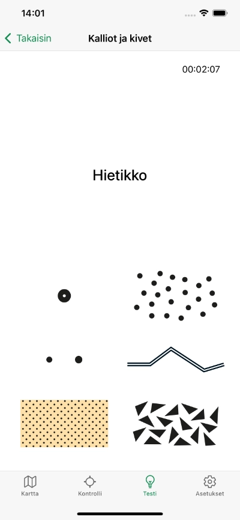
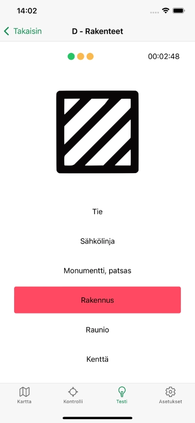
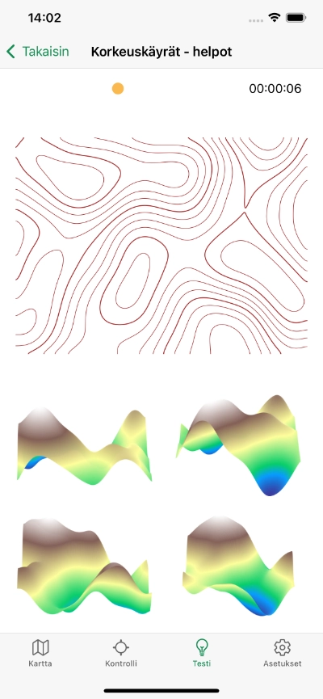
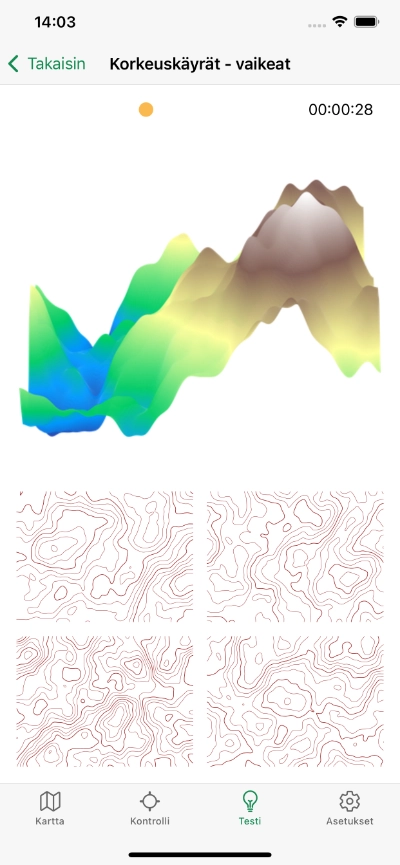
Miksi Orisym?
- Opit yksityiskohtaisesti jokaisen suunnistussymbolin merkityksen
- Testaa tietämyksesi nähdäksesi, missä vaiheessa olet, ja kehittääksesi sitä
- Löydät yksityiskohtaiset kuvaukset niiden merkityksistä kartta- ja tarkastuspaikkasymbolien luettelosta
- Tutustut näiden kahden symbolityypin keskinäisiin yhteyksiin ja niiden suhteisiin
- Paranna avaruudellista orientaatiotasi tunnistamalla maasto ääriviivojen perusteella
- Sovelluksen käyttämiseen ei tarvita internetiä, se toimii offline-tilassa